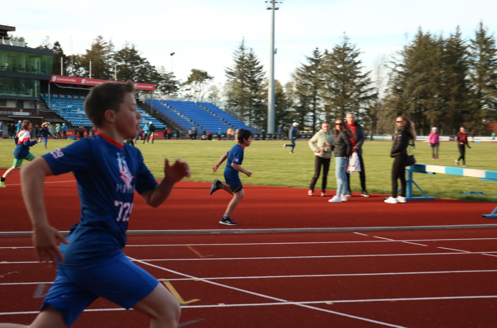

Track and field
Athletics, also known as track and field, is a highly popular co-curricular activity offered in many schools. It is a collection of sports events that involve running, jumping, and throwing. Participating in a school track and field team can offer students many benefits, including opportunities to develop physical fitness, mental toughness, and self-discipline. Additionally, competing against other schools can foster a sense of school spirit and pride. Many schools also have a tradition of track and field rivalry with other schools, creating a sense of community and healthy competition. Overall, athletics is a great way for students to stay active, make friends, and develop important life skills.
Grades: G4 G5 G6 G7 G8 G9 G10 G11 G12
Time: Monday, Wednesday & Friday 15:30 - 17:30
Location: ISS Running Track and Field
Supervisors: ad@isstavanger.no
